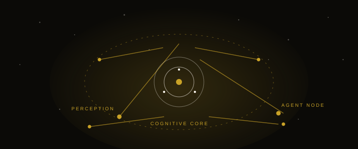
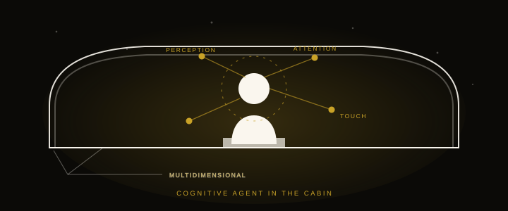
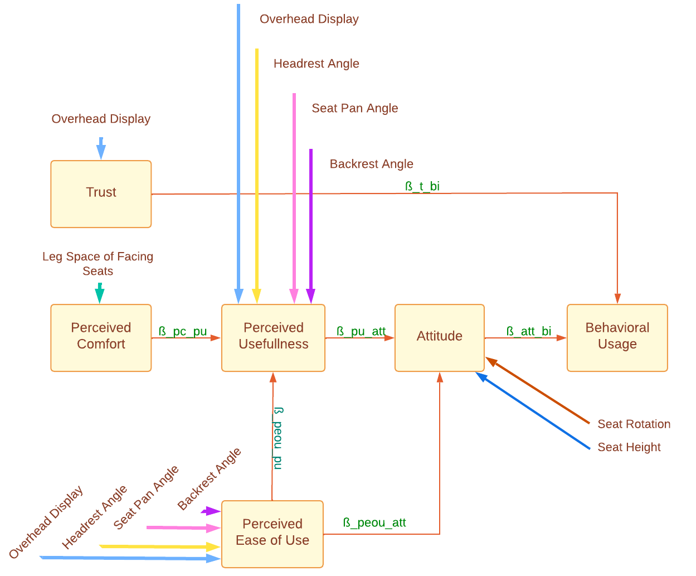
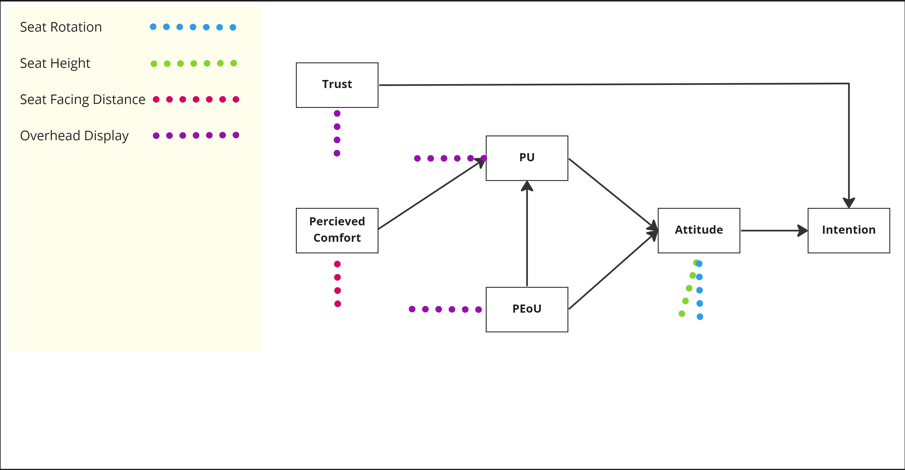
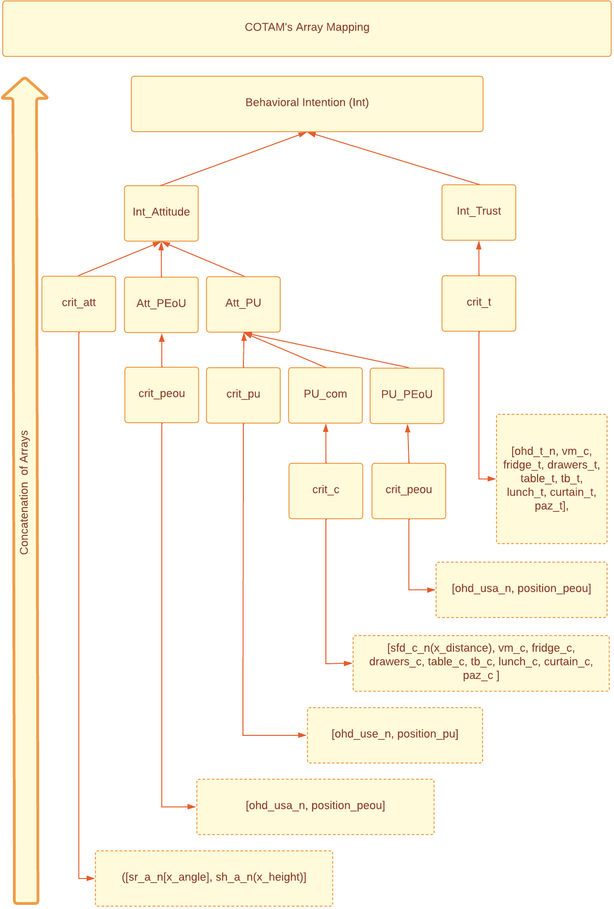
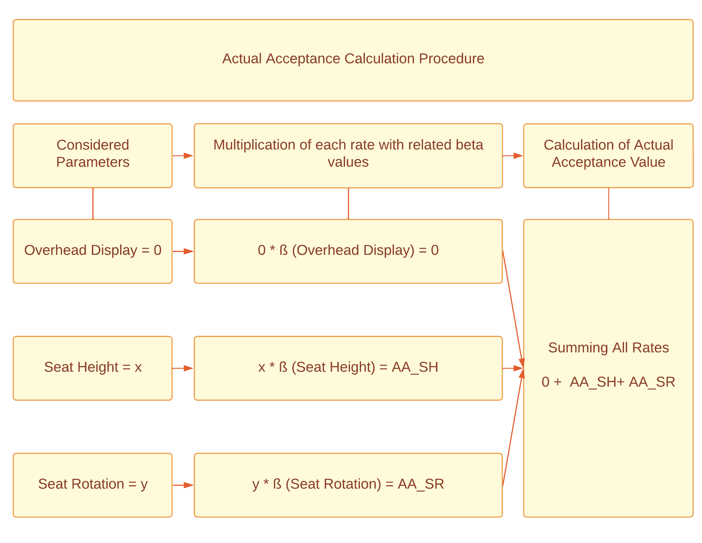
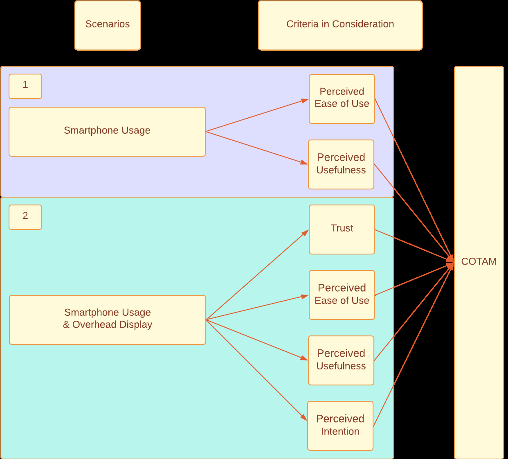
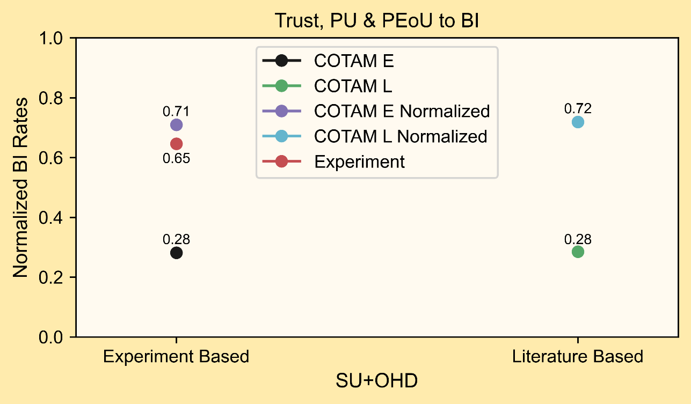
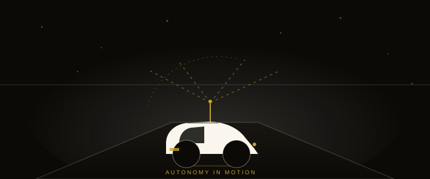
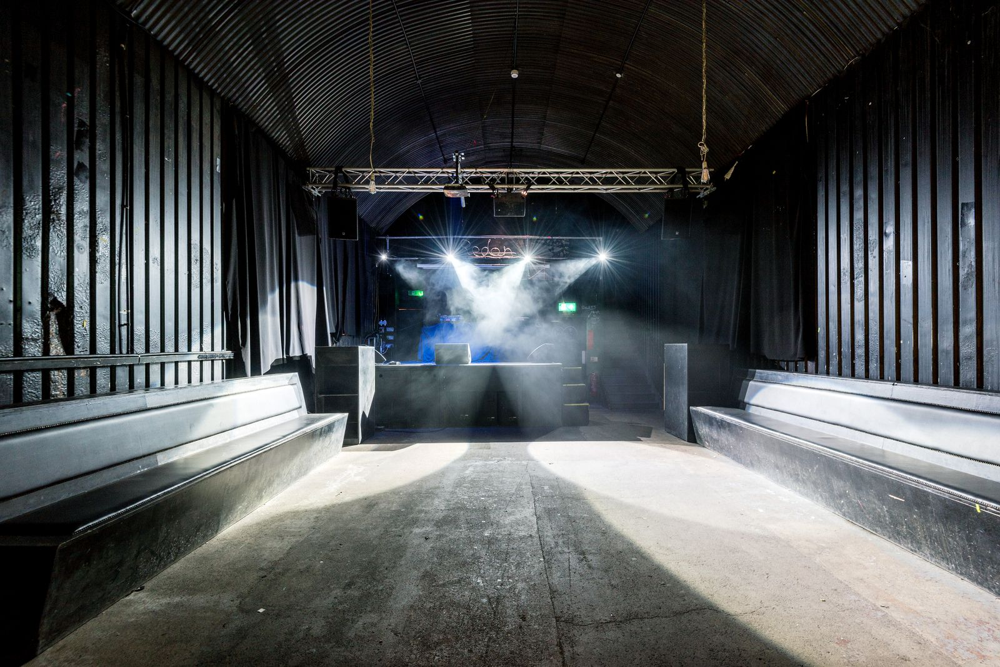

Applied Research Engineer — Aachen
Mehmet Emin
Dilek
Automotive Engineer · Cognitive Agent · Agentic Engineering
In my Master's thesis, I built a computable simulation — a cognitive agent model that predicts user acceptance of highly automated driving.
01 / About
Human-centred by design,
engineered with data.
I'm an Applied Research Engineer with an MSc in Automotive Engineering and hands-on experience in Python-based data analysis, statistical modelling and human behaviour experiments within highly automated driving.
My work lives where psychology, statistics and engineering meet: designing user studies, modelling acceptance, and currently building a cognitive simulation framework to study how a cognitively structured user interacts with highly automated vehicles — using agent-based workflows and AI-assisted development.
User-Centred Design fascinates me precisely because it connects disciplines. My thesis turned theory into a living, computable product: a model that predicts the acceptance rate of future users for highly automated vehicle interiors — a cognitive model of how people come to accept and use technology (TAM).
Every complex dataset I meet, I want to clean it, understand it, and turn it into something useful.
Diving deep into
Cognitive Architecture
Designing the inner structure of an artificial agent that mirrors human cognition — perception, attention, reasoning and trust — so we can simulate real users instead of approximating them.

Agentic Engineering
Simulating humans as cognitive agents inside the cabin — modelling perception, attention, trust and intention in real time, so the highly automated driving experience adapts to the person. The cabin is no longer one-dimensional: it reads and responds to a whole human user.

Currently developing
Agentic engineering — orchestrating multiple AI coding agents into workflows that plan, build, test and iterate end-to-end. The core simulation: modelling the user as a cognitive agent inside the cabin to understand real mobility needs — because the cabin is no longer one-dimensional.
02 / Skills
What I work with
Python — pandas, numpy, statsmodels, matplotlib, TensorFlow
MATLAB
R
User studies & questionnaires
Statistical modelling — linear regression, SEM
Data processing, visualization & analysis
English — C1
German — B2
Turkish — C2
03 / Experience
Where I've worked
Communicating with language models to make them sound more humanistic over specific topics — sharpening authenticity and natural dialogue quality.
Data and model labelling to refine how AI models sound and respond — the same discipline applied at Outlier AI, keeping generated language natural, accurate and human.
Co-designed and conducted user behaviour experiments within interdisciplinary research projects.
Analysed experimental data using Python, statistical methods and behavioural modelling approaches; processed, visualised and interpreted results to identify behavioural patterns.
Numerical simulation and model validation of diesel injection systems, contributing to scientific publications.
Numerical and sensitivity analysis of railway wagon designs.
04 / Education
Academic background
RWTH Aachen University — 2018 – 2023
Thesis: Python-based statistical modelling and regression analysis of user acceptance for highly automated vehicle interiors.
Yildiz Technical University — 2010 – 2016
Additional coursework at Duisburg-Essen University (2015) and Istanbul Technical University (2016–2017).
05 / Thesis
A computable model of acceptance
for the highly automated cabin.
In a highly automated vehicle the occupant stops driving — and the interior becomes a living space. Whether people accept the technology is then decided by the design of that space: seat rotation, comfort, screens, leg room. The problem: interior design parameters and user-acceptance psychology (the Technology Acceptance Model, TAM) were treated as separate worlds.
My master's thesis (ika, RWTH Aachen University, 2023) closed that gap. It turned the TAM — a psychological, non-computable theory — into COTAM, the Computable Technology Acceptance Model, connecting the beta coefficients of acceptance psychology to the concrete geometry of an interior concept.
Acceptance here is modelled as the TAM chain: trust (T) and attitude (ATT) directly drive behavioural intention (BI), attitude itself is driven by perceived usefulness (PU) and perceived ease of use (PEoU) and, additionally, by directly perceived comfort (C). Each arrow carries a standardized beta coefficient from literature (Eq. 4-2):
γ′ = β₁ · x
Every parameter class in the interior is a NumPy array of rates between 0 and 1. When a parameter is absent from the concept, its rate is simply "0" — so any design becomes a computable vector.


The concept is defined in two steps. First the two scenario-defining choices: seat rotation (0–360°, surveyed every 30°) and seat height (38–46 cm). Then the posture and equipment complete the cabin — backrest (130–157°), seat pan (11–15°), headrest (95–97°) and the optional components (overhead display, vending machine, fridge, drawers, table, trash bin, lunch server, e-curtain). Between the surveyed points linear interpolation predicts any angle or centimetre (Fig. 4-5 / 4-6).
The model also respects geometry: the user is a point with 120° of peripheral vision. A seat facing it (rotation 180°) activates the leg-distance criterion (44–65 cm), and an overhead display only contributes while it stays inside the user's peripheral vision — hence the rotation rule 160° ≤ angle ≤ 280° → contribution 0.


Each array is multiplied by its standardized beta coefficient, then concatenated along the TAM chain — exactly as in the original Python implementation:
PU = [crit_pu | β_c·pu·crit_c | β_peou·pu·crit_peou]
ATT = [crit_att | β_peou·att·crit_peou | β_pu·att·PU]
BI = [β_att·int·ATT | β_t·int·crit_t] → Int_act = Σ BI
To compare designs on a common scale, COTAM also computes a maximum acceptance value (all arrays at their best rates) and scales (Eq. 4-3, Amin=0):
Acceptance Rate [%] = (Aactual − Amin) / (Amax − Amin) · 100
COTAM was validated in the ika static-driving mock-up (KAI — AI-supported assistant for interior development): experts from the vehicle-concept department experienced five scenarios — laptop usage, smartphone usage, smartphone with overhead display, personal audio zone (PAZ) and seat facing with leg distance — and rated them via questionnaires (UEQ, SUS, trust scale). The experiment's own criteria rates, fed back into COTAM, came out significantly close to the measured acceptance:
- Smartphone + overhead display — measured vs COTAM: ~6 % difference (7 % without normalization)
- Personal Audio Zone — ~2 % difference, for a scenario COTAM had never seen before
- Enriched interior concept — ≈ 59.1 % acceptance rate, clearly above the threshold, so components (e.g. trash bin) could be dropped without hurting acceptance
COTAM consequently answers not only established scenarios but also any future, unthought-of interior — that is the point for a radical innovation like highly automated driving.


Try the model
Configure a cabin concept — COTAM computes the acceptance rate live, with the same beta coefficients and data as the original thesis model.
Full source, notebooks, survey data and all thesis figures on GitHub: github.com/memoNbr/COTAM ↗
References
- [FRE89] Fred D. Davis — Perceived Usefulness, Perceived Ease of Use, and User Acceptance of Information Technology. 1989, 319–340.
- [LEE03] Lee, Y., Kozar, K. A., Larsen, K. R. T. — The Technology Acceptance Model: Past, Present, and Future. Communications of the Association for Information Systems, 2003.
- [VEN03] Venkatesh, V., Morris, M. G., Davis, G. B., Davis, F. D. — User Acceptance of Information Technology: Toward a Unified View. MIS Quarterly, 27(3), 2003, 425–478.
- [JIA00] Jian, J.-Y., Bisantz, A. M., Drury, C. G. — Foundations for an Empirically Determined Scale of Trust in Automated Systems. International Journal of Cognitive Ergonomics, 2000, 53–71.
- [GRO20] Gross, C., Siepermann, M., Lackes, R. — The Acceptance of Smart Home Technology. Perspectives in Business Informatics Research, Springer, 2020, 3–18.
- [NAS20] Nastjuk, I., Herrenkind, B., Marrone, M., Brendel, A. B., Kolbe, L. M. — What Drives the Acceptance of Autonomous Driving? Technological Forecasting and Social Change, 2020, 120319.
- [MEY22] Meyer-Waarden, L., Cloarec, J. — "Baby, you can drive my car": Psychological antecedents that drive consumers' adoption of AI-powered autonomous vehicles. Technovation, 2022, 102348.
- [LEH19] Lehmann, S. — How Will We Travel Autonomously? User Needs for Interior Concepts and Requirements Towards Occupant Safety. 2019.
- [LUI18] Luís Oliveira, L., Luton, J., Iyer, S., Burns, C., Mouzakitis, A., Jennings, P., Birrell, S. — Evaluating How Interfaces Influence the User Interaction with Fully Autonomous Vehicle. 2018, 320–331.
- [FIO21] Fiorillo, I., Nasti, M., Naddeo, A. — Design for Comfort and Social Interaction in Future Vehicles: A Study on the Leg Space Between Facing-Seats Configuration. International Journal of Industrial Ergonomics, 2021, 103131.
Full bibliography in the thesis: Dilek, M. E. — Modeling Effects of Interior Design Parameters on User Acceptance Criteria for Highly Automated Driving. Master Thesis, Institute for Automotive Engineering (ika), RWTH Aachen University, January 2023.
06 / Projects
Things I've built.
Hover a row to take a look.
Cognitive Agent Simulation
Research · AI-assisted development
A living simulation of a human as a cognitive agent inside the cabin of a highly automated vehicle — modelling perception, attention, trust and intention to understand real mobility needs. The cabin is no longer one-dimensional; it adapts to the person.
User Acceptance Model
Thesis · Statistical modelling
A Python-based, computable model predicting the "Acceptance Rate" of future users for highly automated vehicle interiors. Built on the Technology Acceptance Model (TAM), combining regression analysis and structural equation modelling grounded in user study data.

07 / Passions
Beyond the engineering
Digital Music Production
When I'm not modelling behaviour, I'm shaping sound. I produce electronic music — building tracks from raw samples up inside Ableton Live, exploring rhythm, texture and emotion with the same patience I bring to data.
Listen on SoundCloud →
08 / Contact
Let's build something
intelligent.
Open to research collaborations, engineering roles and interesting conversations — in English, German or Turkish.
mhmted@gmail.comAachen, Germany · 52062